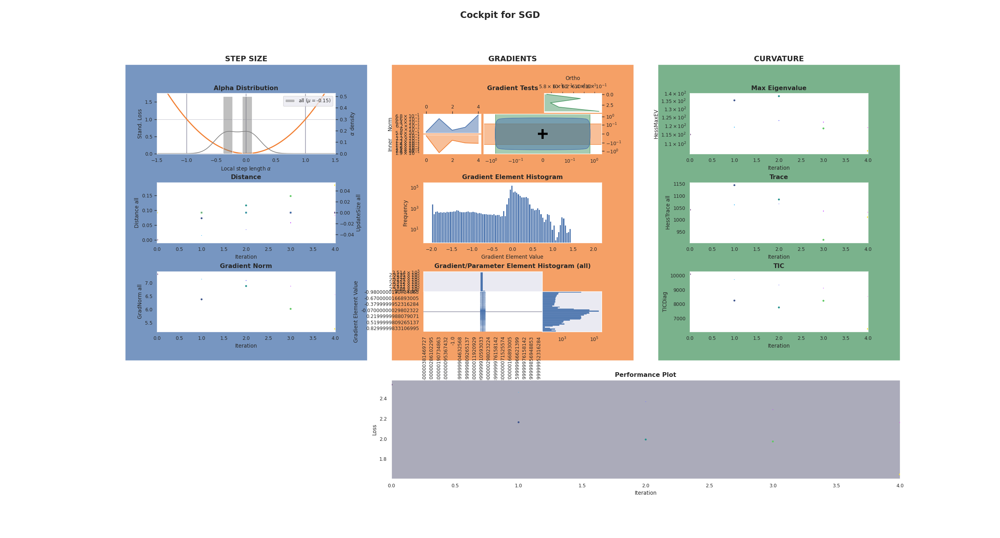

Basic Example¶
This snippet below shows an example of using Cockpit with a standard PyTorch training loop. Lines that are highlighted in yellow highlight Cockpit-specific code, but don’t worry, most of these changes are simple plug-and-play solutions.
You can try out this basic example yourself. Simply install Cockpit via
pip install 'git+https://h1j9d3q.github.io/cockpit/'
and then copy the example files from the repository or from the code block below.
Note
Don’t forget the utility file
which provides the data for this example.
1"""A basic example of using Cockpit with PyTorch for Fashion-MNIST."""
2
3import torch
4from _utils_examples import fmnist_data
5from backpack import extend
6
7from cockpit import Cockpit, CockpitPlotter
8from cockpit.utils.configuration import configuration
9
10# Build Fashion-MNIST classifier
11fmnist_data = fmnist_data()
12model = extend(torch.nn.Sequential(torch.nn.Flatten(), torch.nn.Linear(784, 10)))
13loss_fn = extend(torch.nn.CrossEntropyLoss(reduction="mean"))
14individual_loss_fn = torch.nn.CrossEntropyLoss(reduction="none")
15
16# Create SGD Optimizer
17opt = torch.optim.SGD(model.parameters(), lr=1e-2)
18
19# Create Cockpit and a plotter
20cockpit = Cockpit(model.parameters(), quantities=configuration("full"))
21plotter = CockpitPlotter()
22
23# Main training loop
24max_steps, global_step = 5, 0
25for inputs, labels in iter(fmnist_data):
26 opt.zero_grad()
27
28 # forward pass
29 outputs = model(inputs)
30 loss = loss_fn(outputs, labels)
31 losses = individual_loss_fn(outputs, labels)
32
33 # backward pass
34 with cockpit(
35 global_step,
36 info={
37 "batch_size": inputs.shape[0],
38 "individual_losses": losses,
39 "loss": loss,
40 "optimizer": opt,
41 },
42 ):
43 loss.backward(create_graph=cockpit.create_graph(global_step))
44
45 # optimizer step
46 opt.step()
47 global_step += 1
48
49 print(f"Step: {global_step:5d} | Loss: {loss.item():.4f}")
50
51 plotter.plot(cockpit)
52
53 if global_step >= max_steps:
54 break
55
56plotter.plot(cockpit, block=True)
Try running this example script
via
python 01_basic_fmnist.py
During every iteration of the training process, Cockpit will show you a status screen of the training.
$ python 01_basic_fmnist.py
Step: 1 | Loss: 2.5365
[cockpit|plot] Showing current Cockpit.
Step: 2 | Loss: 2.1643
[cockpit|plot] Showing current Cockpit.
Step: 3 | Loss: 1.9929
[cockpit|plot] Showing current Cockpit.
Step: 4 | Loss: 1.9733
[cockpit|plot] Showing current Cockpit.
Step: 5 | Loss: 1.6479
[cockpit|plot] Showing current Cockpit.
[cockpit|plot] Showing current Cockpit. Blocking. Close plot to continue.
which will look something like this
In the following, we will break-down and explain each step of this exampe, which also explains what is required to include Cockpit to a training loop.
Imports¶
1"""A basic example of using Cockpit with PyTorch for Fashion-MNIST."""
2
3import torch
4from _utils_examples import fmnist_data
5from backpack import extend
6
7from cockpit import Cockpit, CockpitPlotter
8from cockpit.utils.configuration import configuration
Additionally to importing PyTorch, we import BackPACK which will automatically
be installed when installing Cockpit. We also import the Cockpit
and CockpitPlotter class which will let us track and then
visualize insightful quantities.
To simplify the code snippet, in line 4, we import from a utils file which will provide us with the Fashion-MNIST data.
Defining the Problem¶
10# Build Fashion-MNIST classifier
11fmnist_data = fmnist_data()
12model = extend(torch.nn.Sequential(torch.nn.Flatten(), torch.nn.Linear(784, 10)))
13loss_fn = extend(torch.nn.CrossEntropyLoss(reduction="mean"))
14individual_loss_fn = torch.nn.CrossEntropyLoss(reduction="none")
Next, we build a simple classifier for our Fashion-MNIST data set.
The only change to a traditional training loop is that we need to
extend
both the model and the loss function using BackPACK.
This is as simple as wrapping the traditional model and loss function in the
extend() function provided by BackPACK.
It lets BackPACK know that additional quantities (such as individual gradients)
should be computed for these parameters.
For the Alpha quantity we also require access to
the individual loss values, which can be computed cheaply but is not usually
part of a conventional training loop.
We can create this function analogously to the regular loss function just setting
the reduction=None.
There is no need to let BackPACK know about its existence, since these losses
will not be differentiated.
Configuring the Cockpit¶
19# Create Cockpit and a plotter
20cockpit = Cockpit(model.parameters(), quantities=configuration("full"))
21plotter = CockpitPlotter()
Computation of the quantities and storing of the results are managed by the
Cockpit class. We have to pass the model parameters, and a
list of quantities, which specify what should be tracked and when.
Cockpit offers configurations with different computational complexity:
"economy", "business", and "full" (see also
configuration()). We will use the provided
utility function to track all possible quantities.
Training Loop¶
26 opt.zero_grad()
27
28 # forward pass
29 outputs = model(inputs)
30 loss = loss_fn(outputs, labels)
31 losses = individual_loss_fn(outputs, labels)
32
33 # backward pass
34 with cockpit(
35 global_step,
36 info={
37 "batch_size": inputs.shape[0],
38 "individual_losses": losses,
39 "loss": loss,
40 "optimizer": opt,
41 },
42 ):
43 loss.backward(create_graph=cockpit.create_graph(global_step))
Training itself is straightforward. At every iteration, we draw a mini-batch, compute the model predictions and losses, then perform a backward pass and update the parameters.
The main differences with Cockpit is that the backward call is surrounded by
a with cockpit(...) context, that manages the extra computations during the
backward pass. Additional information required by some quantities is passed
through the info argument.
Plotting the Cockpit¶
49 print(f"Step: {global_step:5d} | Loss: {loss.item():.4f}")
50
51 plotter.plot(cockpit)
At any point during the training, here we do it in every single iteration, the
computed metrics can be visualized by calling the plotting functionality of the
CockpitPlotter via plot().
53 if global_step >= max_steps:
54 break
55
56plotter.plot(cockpit, block=True)
After the final iteration, we will again show the full Cockpit view. The option
block=True allows us to pause our program and inspect the plot for as long as
we want.
The final Cockpit status screen will look similar to this:
Simply closing the plotting window ends the program and this example.